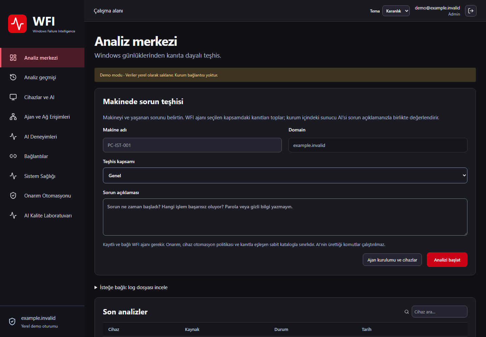

Makineden doğrudan teşhis
Windows olayları, servisler, BigFix ve SCCM bulguları. Log dosyası yüklemek ana akış için zorunlu değil.
Geliştirme önizlemesi · 0.6.0-preview.6
Yerel AI. Kontrollü onarım. Tek konsol.
Makineyi seçin, sorunu anlatın. WFI ajanı kanıtları toplasın; sunucudaki yapay zekâ bulguları değerlendirsin. Onarım, onaylı işlem kataloğu ve cihaz politikalarıyla yürüsün.
Üretim kabulü açık. Paketler henüz Authenticode imzalı değildir.
TEŞHİSTEN DOĞRULAMAYA
Windows olayları, servisler, BigFix ve SCCM bulguları. Log dosyası yüklemek ana akış için zorunlu değil.
Ollama sunucuda çalışır. Geçmiş doğrulanmış deneyimler bağlam sağlar; olumsuz geri bildirimler tekrar kullanımı engeller.
Keyfi AI komutu yürütülmez. Onarım Otomasyonu: pilot grupları, bakım aralıkları ve belirsiz sonuçta duraklatma desteklenir.
KURUM İÇİ MİMARİ
Kanıt toplama
Onaylı işlemler
Kalıcı sonuç günlüğü
İş kuyruğu · Politika · Denetim
Yerel yönetici / LDAPS
Teşhis kanıtları
Kontrollü onay
Ajan için inbound port gerekmez. GitHub Pages yalnız bu tanıtım sitesini sunar; şirket konsolu ve verileri GitHub üzerinde çalışmaz.

Ölçülebilir işletim
Sistem Sağlığı, bekleyen teşhisleri ve yapılandırılmış model kapasitesini gösterir. BigFix merkez raporu, yerel BESClient sonucundan ayrı izlenir.
Varsayılan kırmızı-beyaz aydınlık tema, sağ üstten karanlık tema, mobil görünüm, test sonuçları ve açık kabul maddeleri belgelenir. Gerçek AD/HA, Windows kurulum kabulü ve 40 bin aktif cihaz kapasitesi henüz doğrulanmış değildir.
Doğrulama kapsamını incele →Kırmızı-beyaz WFI tasarımı günün ilk oturumunda sizi karşılar. Sağ üstteki tema seçimi karanlık görünümü açar ve tercihinizi hatırlar.
Onarım Otomasyonu; pilot, ayrı genişleme onayı ve bakım penceresiyle mevcut güvenlik sınırlarını korur.

İNDİRME VE KURULUM
Yönetici yetkili, etkileşimli tek EXE. Programlar ve Özellikler kaydı, Berkay Atağ yayıncı adı ve kırmızı WFI simgesi. İleri → parola belirle → Kur → Bitir. IIS, .NET, PostgreSQL ve Ollama/model otomatik hazırlanır. İlk giriş local:admin; LDAP sonradan etkinleştirilebilir. İlk kurulum internetten birkaç GB indirir. Gerçek Windows VM kabulü henüz açık.
Sunucu EXE ↓Sunucu rehberi →Tek EXE ve sessiz dağıtım seçenekleri. Cihaz kimliği ile sunucu adresi kurum konsolundan alınır. Yeni istemci ilk bağlantıda envantere yansır. Programlar ve Özellikler yayıncısı: Berkay Atağ; kırmızı WFI simgesi.
Kurum konsolunda: Ajan ve Ağ Erişimleri → Windows ajanını indir
İstemci rehberi →